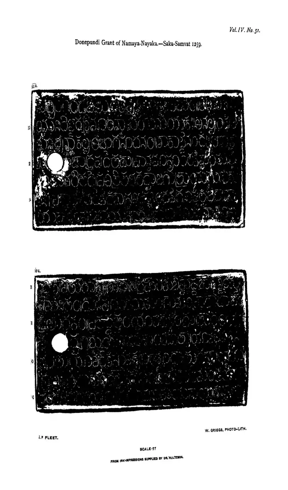
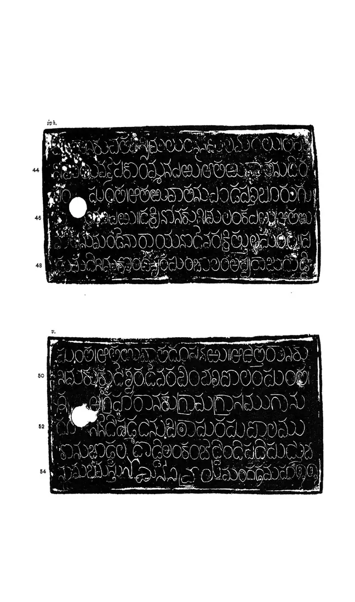

A note on the alphabet of the Donepūndi grant
A NOTE ON THE ALPHABET OF THE DONEPUNDI GRANT.
By F. KIELHORN, Ph.D., LLD., C.I.E.; GÖTTINGER.
Dr. Hultzsch having kindly consented to publish the accompanying pined-litter repl. of his voice has been prepared under Dr. Fleet's supervision, of the Donepândi grant of Saka-Samvat 2259, edited by me above, Vol. IV. p. 356 ff., I take the opportunity of adding a new remark on the writing of that most beautifully engraved inscription. I have already stated that the characters are Telugu. In general, they are the same as those of the Vânapalli plates of Anur-Vêma, published with a photolithograph above, Vol. III. p. 59 ff., which are only about forty years later; but there are one or two interesting differences between the characters of the two inscriptions.
Of initial vowels the Vânapalli plates contain a, â, ê, and ri; in the present grant i and ri do not occur, but, on the other hand, we here have also î, in the word î in lines 42 and 51; ç, in Umd, l. 1; and ê, in êvam, l. 15, êtad, l. 38, etc.
Of the ordinary Sanskrit consonants, gh, ñ, jh and dh do not occur in the Donepândi grant; and the signs for chh and ñ only occur in conjuncts, as subscript letters, 1 anvichekhan, l. 31, yâvachchhrîmun, l. 39, and vijñâna, l. 34. The signs which may be specially drawn attention to are those for k, ph, and bh.
In the sign for k the horizontal line between the top-stroke (talakatṭu) and the circle is joined with the latter by a straight line, which forms a sharp angle with the horizontal line, as may be seen from kari, l. 1, kruta, l. 2, etc. This (eursive) sign for k, which does not occur in the Vânapalli plates and is not found in any of the published palacographic Tables, is also used in the Dibbida plates of Śaka-Samvat 1191, published with a photolithograph above, p. 196 ff., and in the three inscriptions of Kâṭaya-Vêma2 of Śaka-Samvat 1313-38, published above, Vol. IV. p. 328 ff. It clearly is the immediate precursor of the k of the modern Telugu alphabet.
The sign for ph is distinguished from the sign for p by a separate semicircular line, placed below the sign for p; compare the pha of phala, l. 4, with the pa of lainpaṭu, l. 6. The same sign for ph is used in the Vânapalli plates, e.g. in phalaka, l. 7. In a Chêbrôlu inscription of Jâya of Śaka-Samvat 1157, we still find the earlier sign in which the distinguishing semicircular line intersects the proper left vertical line of the sign for p.3
The sign for bh, in the aksharas bha, bhu, bhû, bhya and bhyâ, is distinguished from the sign for b by the top-stroke of bh; compare the bha of bhava, l. 3, with the ba of bubhû, l. 9. In aksharas where there is no room for the top-stroke, bh sometimes is distinguished from b by
1 This verse is usually given more or less incorrectly,—for instance, P. S. O.-C. Invers. No. 212 has niddamsana kâyêm; and No. 225 has viddamsani; while No. 182 has surâganâm kshaṇa-yuddhasani. But the first word is always jitêna (e.g., P. S. O.-C. Insers. Nos. 212, 225, in both of which it is very clear, as also in the present record). The interpretation of it seemed difficult to Prof. Kielhorn also, who suggested some time ago that the original reading might be jivêna (Ind. Ant. Vol. XVII. p. 202, note 4). But he now considers that jitêna is correct, and is to be translated “by him who has conquered,” on the analogy of vidita, “one who has learnt,” in the first verse of the Kirdârjuntya, where the commentary cites pitâ gâvah, bhuktâ brâhmupah, and vibhaktâ bhrâtarah, all in an active sense.—Since writing the preceding remarks, I have heard from Prof. Kielhorn that he finds that the verse is from the Pardâraasmriti, Âchârakâpâda, Adhâya III. verse 37 (Bombay edition, Vol. I. Part II. p. 273), which gives it in the form—Jitêna labhyatâ Lakshmir mpitêu=âpi surâganâh kshayadhvañsini kâyê=smin kâ chintâ maranâ raṇâ, and that Mâdhavâchârya explains jita as a past passive participle denoting the agent (“one who has conquered”), exactly as suggested by Prof. Kielhorn.
2 I owe excellent impressions of these inscriptions to the kindness of Dr. Hultzsch.
3 In the same inscription, of which I shall treat in Vol. VI., the sign for dh is distinguished from the sign for d by a semicircle, open to the proper right, which is placed below, and attached to, the proper left curve of the sign for d.
a small opening in the lower part of the sign for bh, as in vibhávyaté, l. 14, and nabló, l. 11; but just as often there is no difference at all between bh and b, as may be seen e.g. from a comparison of vibôr- (for vibhôr-). l. 19, with bolani, l. 48, or from vibihnn- (for vibhinn-), l. 14, abísht- (for abísht-), l. 36, etc. It is interesting to observe that in all such cases (where in the Donepúndi grant bh practically does not differ from b), in the Vánapalli plates, the sign for bh is generally distinguished from the sign for b by just such a separate semicircular line as above we have found to distinguish ph from p; compare in the Vánapalli plates rẹpbáti1 l. 3, Šanibhôr-, l. 4, náblá, l. 7, etc. Moreover it may be noted that in the inscription B. of Kátaya-Vêma, above, Vol. IV. p. 320, in the bh of Bhínésvara in line 8, the distinguishing semicircular line has been changed into a downward stroke, so that the sign for bh looks exactly like the bh of the modern Telugu alphabet.
In addition to the signs of the ordinary Sanskrit consonants, the Donepúndi grant also contains the sign for the Dravidian l, e.g. in sunirmaļa, l. 11, and the sign for r, e.g. in éru, l. 44. In the sign for the r of taruvúta in line 49 the engraver erroneously has omitted the horizontal line in the interior of the letter.
Regarding the signs of subscript consonants it may be noted that in the conjuncts nn and np the same sign is used for both (the second) n and n2 as in nnamah, l. 1, and nishanna (nna), l. 13. Attention may also perhaps be drawn to the form of the subscript l, e.g. in Emiļapalli, l. 45, and putlu, l. 53.—Of final consonants which are not joined with a following letter, only t occurs, in aranjayet, l. 17, and dhá(dâ)nát, l. 23.
As regards medial vowels, I have already indicated that there is hardly any difference between the signs for i and î; compare e.g. gíta-kírtih, l. 5, and dídhitim, l. 27. In engraving the akshara mí of ktum-íshté in line 21 the engraver has made a mistake, which, to judge from the impression, was subsequently corrected by him. Another mistake was made by him in engraving the akshara nó at the end of line 15, as may be seen by a comparison of the proper sign for nó in 3šinur=nnó, l. 24, or the no of Jaganobbagamđąa in line 27 of the Vánapalli plates.
That the plates, near the proper right margin of the first inscribed side of each plate, contain the numeral figures from 1 to 5, has been already stated.
1 The akshara bhâ of this very word is reproduced in Prof. Bühler's Indische Palaeographie, Table VIII. col. ix. No. 33, but without the characteristic semicircular line at the bottom, which is quite clear and distinct in the published photolithograph of the Vánapalli plates. The same column contains other similar errors which need not be specified here.
2 The same practice is followed in some very much earlier inscriptions; compare e.g. in the Sátárá plates of the Eastern Chalukya Fyvarája Vishnuvardbana I. (Ind. Ant. Vol. XIX. p. 809, and Plate) sampannah, l. 4, and paurṇṇamásyán, l. 13.—It may be noted that both in the Donepúndi grant and in the Vánapalli plates the conjunct rrṇ is always written by the sign for rna.
Plate 1 is bound after this page.
Plate 2 is bound after this page.

